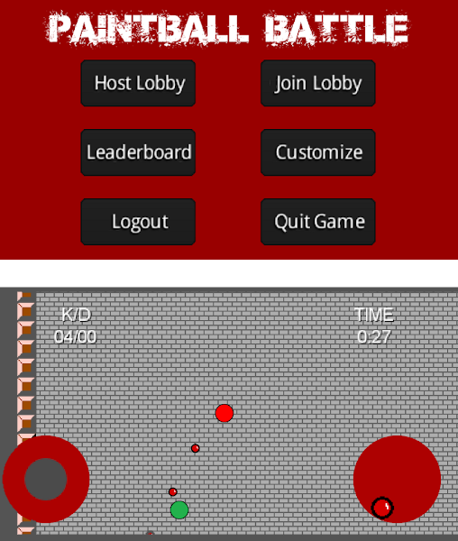
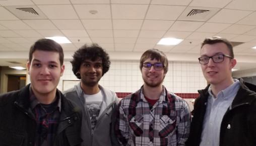
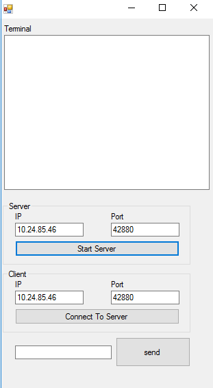
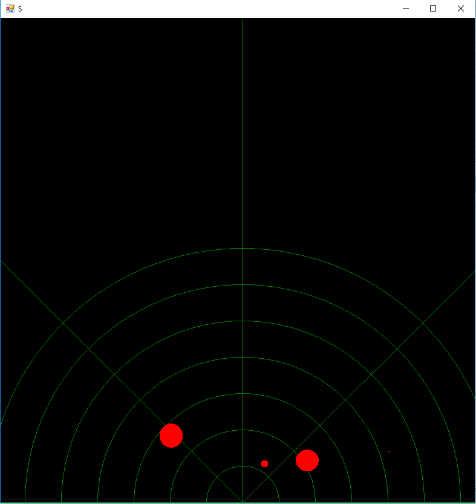
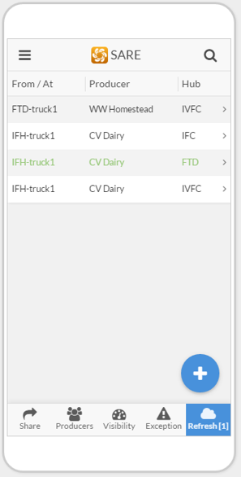

I'm Mehul Shinde.
A Computer Engineer driven by innovative ideas in technology.
About

Education:
Bachelor's of Science in Computer Engineering, Iowa State University Class of 2019
Objective:
I am always in awe of new technology and like to think of myself as a tech geek. I have experience developing software for research projects, start-ups, and enterprise as part of internships and jobs. I wrote my first Java program when I was 10 and have been awestruck by the impact technology can create on the world and the number of lives a piece of software can affect. My career objective is to develop technology that is not just used by millions of users but also that the technology I create affects their lives in a positive way.
Projects
CyDrone
Senior Design Project, Team Lead
C, C++, ROS, WebODM, Python, Blender & ReactJS
Problem Statement:
The client wanted an open-source web-application to simulate and control a drone with an ability to create a virtual simulation environment based on the real environment of the drone.
Solution:
- A web-application simulator based on AngularJS and Gazebo
- A drone embedded with Raspberry Pi running ROS and a camera
- A computer vision module to generate a virtual model using ODM and Blender/Python
Implementation:

Following are the individual modules of the project listed with implemented technologies:
- Django app (Python, JavaScript)
- Serves web frontend (React), handles user requests, and starts simulations
- Serves web frontend (React), handles user requests, and starts simulations
- GzWeb container (primarily C++)
- Gazebo runs the simulation itself, with the loaded simulation environment and flight physics. GzServer and Node server relay the simulation to the web client.
- ArduPilot handles piloting the drone and plotting flight paths
- Computer vision module (Python)
- Open Drone Mapping (ODM) service creates an environment model
- Blender, Gazebo Simulation Depiction Format (SDF)
- Raspberry Pi used for drone control (C++)
- Communicates with APM planner and Flight Control Unit (PXFmini) using MAVlink
- Runs Robot Operating System (ROS)
- Raspberry Pi used for image processing (Python)
- Livestreams video from the drone
- Geo-tags the images taken by it for image stitching purposes

My Role:
I act as the team lead for this project.
The team is divided in three sub-groups with each sub-group responsible for development in either simulation, control or the computer vision aspect of the application. The team is following Agile methodology to deliver this project. Some of the core technologies on which the application will be built are: ReactJS and Gazebo to run the controls and simulation, ROS as an interface between the application and the drone
and WebODM for generation of simulations using computer vision.
My Contribution:
I have played the role of both the team lead and a back-end developer in this team. I have primarily focuded on the computer vison
aspect of the project and have implementeed drone imagery mapping system for the project. O look forward to implementing other senor integration in the project in the coming semester.
Project Website: sdmay19-35.sd.ece.iastate.edu/
Paintball Battle
Android Game (Won Honorable Mention in COMS 309)
Java, libGDX, XML, SQL & PHP.
This project is a top-down twin-stick shooter game for the Android platform that focuses on online
multiplayer.

The user interfaces were as follows:
- Login Screen- User inputs their account information to login.
- Registration Screen- User inputs their desired account information to register.
- Main Menu- User selects which screen they wish to navigate to.
- Customization Screen- User chooses desired character color and joypad sensitivity.
- Leaderboard- User views the statistics of all players.
- Host Screen- User selects map and time limit, creates game.
- Join Screen- User selects a host to join their game.
Being a new set of people working together for the first time, everyone took some time getting
acquainted to the skills we had as a team and the resources we could use to make this project a success.
But once this threshold was crossed, team effort could be reflected in every task/assignment we were assigned.
The team met more regularly than expected and made sure that everyone was on the same page at all given times.
I, being a ‘newbie’, found it very nice of everyone in the team for them going out of their way and
taking time in explaining me things that weren’t that obvious to me. Apart from great team coordination, the team
also spent countless hours working together at the same place so that difficulties and confusions could be addressed right away.
The long group coding sessions had a huge role to play in the success of our project.

This project was a huge learning curve for each one of me. I, personally, learned a great deal about tools such as git and Android Studio which are quite essential in software development. Apart from that, I got to learn more about networking and sockets which I was completely new to.
Tools such as Tiled, libGDX, pencil, Android Studio, volley were a huge value addition to my skill-set
in software developing.
Last, but most importantly, I learned that no matter how intimidating or how easy a project sounds,
there’s no alternative to putting in hours of experimentation and that the success of a project depends
on teamwork, proper use of resources used and pushing work all the time.
Acknowledgement: Cole Huinker, Ryan Glista and TJ Rogers.
Mars Rover
Embedded Systems Project (Final Project for CPRE 288)
C & C#.
This project involved designing and implementing a controlling interface for an ARM processor embedded on an iRobot Roomba.
My team and I also programmed the robot to autonomously navigate through an obstacle course.
The ARM processor communicated with the desktop interface via WiFi. I was involved in the development of
the graphical user interface as well as the C program in the embedded system on the robot.
The graphical user interface for this project was developed using C# in Visual Studio.


Connections between client and server were done using sockets and were handles using the C# code. For debugging purposes, we had set up
a server window to which the client window sent a request and a connection was made. In the demo of the project,
the connection was done between the Robot and the Computer using the same socket. One could transfer data back and
forth using the console of the GUI created. The window looked as shown in the picture.
After inputting a specific data, such as an integer value, the code would read it as a
cue to accept attributes of real-life objects the robot would scan and send to the system.
The code was designed to accept these attributes such as the distance of the object from the robot, the angle at
which the object is located and the width of the object.
These attributes were then used to generate a radar-like view of all the objects scanned by the robot in one go.
The object attributes were manipulated using a series of equations which determined the exact coordinates
where the object GUI elements were supposed to be rendered. Additionally, lines and sectors were rendered on the radar screen for the reference of the user.
The purpose of this GUI was to simplify the experience of operating the robot and to get a clear picture of the obstacles
in the demo area. These objectives were met at the completion of the project.
SARE Inventory Project
SARE Partnership Grant project, worked on as Undergraduate Research Assistant in IMSE Department (Iowa State University).
JavaScript, GoogleAppsScript, VBA & ArcGIS.

The project aims to reduce the overall transportation and warehousing costs for
four food hubs and several producers in the state of Iowa through establishing horizontal collaboration between
them. The collaboration started in 2014, with
3 food hubs and 1 producer, and has since grown to a complex network as
shown in the below graphic. This growing network is experiencing sub-optimal system-wide logistics issues due to
the absence of adequate infrastructures, both
physical and informational. The research team was tasked to develop an inventory tracking system and develop a
mechanism to fairly allocate transportation and warehousing
costs between the food hubs.
The first stage of the project involved the development of a labeling system for the products that are distributed through the collaborative network.
After designing the labels, the team worked to develop an automated label
generating system using an Excel database and a widely available label printer. With this system, producers simply input the number of boxes to be shipped and the name of the
destination food hub, and the labels for each box are generated and printed automatically.
In addition to the label generating system, the team developed a mobile app to help food hub managers,
producers, and truck drivers track and manage inventory movement through the distribution network, using Google servers and
open-source software. The app allows the truck drivers and the food hub managers to track the location of their
products in the network, and help them get information about any problems in their orders like lost or damage boxes.
The food hub managers could run reports and determine the true shipment cost for the number of cases shipped through the
network. After several iterations of testing and incorporating feedback from stakeholders, the mobile app and label generating
system was successfully piloted and made available to the participating food hub managers and producers.
Project website: sites.google.com/site/ifhnetwork/home
GeForge Chatbox commandline
HackISU project (Won Best Use of the API Award)
Python.
GForge is a project-tracking and code supporting software. We implemented a way to execute user-created commands
that could be ran in GForge’s chat rooms. We demonstrated commands that searched StackOverflow, ran Google searches that both
showed up in the GForge chat room, perform simple tasks like create new tickets, update existing tickets and list users assigned to a project.
The script would poll a given chat room looking for commands (beginning with “/”) and if the command existed it would execute
the associated script. The amount of problem solving that went into dealing with this limitation was impressive.
Ref: Blogpost by GForge
Professional Experience
Software Engineer Intern, Copart Inc.
Dallas, TX
August 2019 - Present
- Developed back-end Java and Spring application for the Accounting and Revenue department.
- Designed and implemented a proof-of-concept for Batch Data Flow system using various message brokers and Spring Cloud Data Flow.
- The new Batch Data Flow system reduced the number of request queues from around 200 to 1.
- Participated in the Research and Development of technologies used in the new Accounting and Revenue system.
- Programmed a streaming mechanism for tutorial and lecture video streaming.
Java, Spring, Maven, Apache Kafka, RabbitMQ, H2, JDBC, SQL,& JIRA.
Application Developer, College of Veterinary Medicine, Iowa State University
Ames, IA
February 2019 - May 2019.
- Developed and deployed a cross-platform mobile app for students studying Canine Anatomy.
- Implemented file caching and storage system to cache files and interactive modules to reduce 80% API calls.
- Implemented a document viewer compatible with file formats in Android and iOS environment.
- Programmed a streaming mechanism for tutorial and lecture video streaming.
TypeScript, AngularJS, Ionic, HTML, AJAX, jQuery & CSS.
Information Technology Intern, Farm Bureau Financial Services.
West Des Moines, IA
September 2018 - December 2018.
- Developed a client-facing cross-platform mobile app in an Agile based team environment.
- Programmed and tested features of the app that was going to be used by client/members of FBFS.
- Implemented security check procedures in the account authentication part of the mobile app.
- Implemented a server-side caching system that reduced 90% API calls per day.
- Learned about software-development in corporate environment from various professionals at the company.
- Attended Innovation team meetings and proof-of-concept demos in the company.
C#, .NET, TypeScript, AngularJS, Ionic, HTML & CSS.
Research Assistant, Computer and Electrical Engineering Department, Iowa State University.
Ames,IA
August 2018 - present.
Contributed in development of a solution framework to enable lineage aware data management
Gem5, Apache Spark, Pig, Ceph.
Software Development Intern, RenterGate.
Ames, IA
May 2018 - July 2018.
- Developed a rental-property management software following Agile practices in for of a web application.
- Programmed announcement sorting feature that would sort users as desired by the admin to publish an announcement to.
- Designed and implemented a message chat feature in the tenant and landlord portal.
JavaScript, Polymer, NodeJS, Firebase, HTML & CSS.
Teaching Assistant, Computer and Electrical Engineering Department, Iowa State University.
Ames,IA
January 2018 - May 2018.
- Taught Lab sections of CprE 281- Digital Logics. Troubleshot and Debugged Verilog and CAD programs and logic circuits.
Verilog, QuartusPrime & VHDL.
Android App Developer, Agronomy Department, Iowa State University.
Ames,IA
August 2017 - December 2017.
- Developed and deployed an android application, SmartFarmer, used by farmers to track the expenses and decide the rate of their crops. The app also collects data of farmers using the app which is used for research in the department.
- Designed and developed local and remote sets of SQL databases, which records data and calculates prices even when offline.
- Wrote a RESTful service for the app to communicate with Apache Tomcat server hosted on AWS.
Java, SQL & SQLite.
Software Development Intern, Natural Resources and Ecology Management Department, Iowa State University.
Ames,IA
May 2017 - July 2017.
- Developed and deployed a version 3.0 of ‘PEWI’ an open source simulation web application for watershed management.
- Designed and programmed a file integration feature to make files from outdated versions compatible with latest version using file manipulation of type JSON and CSV.
- Implemented a report generation function which produced a customizable report for the users of the simulation as a printable pdf.
JavaScript, HTML & CSS.
Research Assistant, Industrial Engineering Department, Iowa State University.
Ames,IA
January 2017 - May 2017.
- Developed and deployed a mobile application that helped participants of local food hub network to track products in delivery from producers.
- Wrote back-end code to handle data generated by the app in real time in google apps script.
- Wrote an algorithm to generate node to node routing of the flow of products in a supply chain from available data.
JavaScript, GoogleApps Script & ArcGIS.
Reflections
My Undergraduate Journey at Iowa State University
When I first moved to Ames from India for college at ISU, I was not sure where college life would take me. I had a keen interest in programming and knew a thing or two about Java. I had chosen Computer Engineering solely based on my primary knowledge of Java. I found out that there was more to the field of Computer Engineering when I attended several different classes. I had come a long way from home in a completely new country to study a subject that I was not completely aware of. At such an important turn in my life, ISU turned out to be a perfect place for me to learn and grow both as a human being and as a professional in the field of technology. I see myself as a completely evolved individual compared to the time I first set my foot in Ames. I have grown in terms of knowledge as well as experience. I attribute my growth to three things that ISU had to offer to me: First, the wide array of courses ranging from the General Electives, core Computer Engineering courses, Senior Design as well as the Tech electives which all together got me thinking about critical topics in today’s world and got me working towards solving problems with the knowledge I acquired. Second, my professional experience while I was studying at ISU including my jobs as a tutor, an undergraduate research assistant, a teaching assistant, an app developer, a software development intern as well as the internships I did over the summers of my Junior and Senior years. Third, my involvement in student organization on campus from the first semester which included being an event coordinator in the International Student Council, being the president of Indian Students’ Association and being an active member of IEEE on campus.
All my experience has helped me become an efficient team-member as well as an effective leader when faced with a challenge. Classes such as ComS 311(Algorithms and design), ComS 228(Data structures), CprE 310(Discreet Math), CprE 308(Operating Systems) have boosted my capability of logical thinking and solving real-life problems in a systematic manner. My experience in senior design along with the classes I mentioned above has given me an insight into design process and systems that has, in many ways, shaped my approach towards solving problems. My jobs at ISU, namely, undergraduate research assistant, teaching assistant and software developer have given me experience with dealing with challenges without any direct help. These experiences have lifted my confidence of tackling situations in real-life work environment. Moreover, my jobs also helped me understand the direct application of knowledge I acquired in classes. The professors that I either took classes with or worked under have change my perspective about technology and have always inspired me to excel at whichever field I take up in future.
Courses such as ComS 309 (Software Development practices) and other team projects in other courses including senior design has contributed a lot towards my becoming a team player. I have experienced what it is to work in several kinds of teams including a team of all individuals more experienced than I am as well as a team where I am the most experienced person. Working in team environments taught me a lot about dealing with co-workers which helped me during my internships. Teaching less-experienced people also helped me strengthen my understanding of the subject whereas, learning from more experienced individuals has given me an insight into topics that I would otherwise not learn on my own. Classes such as Leadership Studies (LDST 322) taught me how to deal with conflicts in a team which was a very valuable lesson. In other scenarios, group discussions have triggered my thought processes about certain issues and have made me study some topics in detail. Listening to a counter perspective has made me a good listener and has made me open to ideas and thoughts. In my time as the president of the second largest student organization on campus, the Indian Students’ Association, I learned how to deal with events of massive scale. My affiliation with the organization has also helped me establish connections with professors and students who would not have met me had I not been the president of the organization. I also learned about my ethical responsibilities while I was the president and was raising money for victims of a natural calamity.
Throughout my time at ISU I had to refer external resources to better understand a topic or simply to solve a problem I was faced with. At the end of my undergraduate life, I have become a more learned person for sure, but more than that I have learned to research and dig up required information from various sources way better than I was able to before college. My projects, internships and other technical tasks would not have been a success without online resources such as Stack Overflow, Tutorial Point, Lynda.com, W3schools.com, Khan Academy and YouTube. In addition to that, the ISU Library has been of a great help whenever I wanted a resource that was not available through the channels I mentioned above. Because of my undergraduate research, I have also become familiar with journal and research papers and have gotten an exposure to scientific literature.
My co-curricular and extracurricular activities including Indian Students’ Association, IEEE, Hackathons, musical performances, undergraduate research, tutoring and other campus jobs have shaped me as a person with a world view. My exposure to different type of people and experience in dealing with a wide array of situations is certainly something that gives me an edge over other students in my graduating class. These activities have enabled me to balance between school and personal development in a way that will be useful in my professional life. I have learned to balance two jobs (of technical nature), full-credit load of classes, senior design and involvement in student organizations in a single semester. I have become an efficient planner and have started adhering more to a planned schedule as I kept getting busier in my semester. At the same time, I have made it a point to help and guide other individuals who are in their initial years of college I have spoken at several seminars and lectures about my experience and hope to continue to guide individuals seeking for help. I have also been an advocate of mental health and its importance in a student’s life and have clearly voiced my opinions about mental health and ISU’s role in catering to the needs of individuals seeking help through an interview I gave with Iowa State Daily.
If I were to redo my undergraduate work, I would do a couple of things differently. I would make more friends in my initial classes as a freshman so that I am never left behind in a class and I know someone who can help me. I would master the skill of researching and using online resources to my advantage so that I could get help outside class. I would also lay more emphasis on my grades in Sophomore year so that my cumulative Grade Point Average towards the end of my degree would be higher. Apart from that, I would follow advices of my seniors and professors that I might have neglected at a certain level. I would however not change my attitude towards grabbing any opportunity to learn something new.
How studying more than just engineering helped me study engineering
As a young Grade 7 student, when I wrote my first Java program, I was flabbergasted with the power coding gave an individual. I felt that I could move mountains with my fingertips when I coded. This led me to think about more and more applications of programming in my surroundings. That was when I realized the application of technology was seamless. I had no second thought about what college major I wanted to pursue and now, in my final year of undergraduate studies, I am even more determined of my goal. I want to use my skills, acquired at Iowa State University, to positively impact thousands of lives. I want to write software that positively moves masses, even if it means that I must start my own company or work for an established company to do so. I feel that the best use of one’s knowledge and skills is when it is used for others and hence I want to be able to help and give back to the society while at work.
At Iowa State University, I was fortunate enough to have opportunities to take several General Education courses which not only exposed me to non-engineering course work but also helped me to develop a perspective towards my surroundings and build a world view towards current global issues. I took Micro Economics (ECON 101) as my first elective in freshman year and was enlightened by the process of logically breaking down real-life problems and accessing all real-life choices available to oneself. It really gave me a perspective about the various decisions that companies took regarding their product and the market. It gave a realistic point of view towards the modern-day market and enabled me to think of technology from a market’s perspective.
Another enlightening course that I took was Introduction to Psychology (PSYCH 101), where I learned about different aspects of human Psychology and human behavior. The human behavior aspect of the course really drew me to learn more about the impact of technology on human behavior over years. It also helped me to understand the relationship humans share with technology. Furthermore, the course had several interesting research studies to participate in which made me realize about the various research projects going on at the university.
As part of my U.S. Diversity requirement, I took Leadership Styles and Strategies in a Diverse Society (LDST 322). This course was the most interesting General Education Elective that I took. It gave me an understanding of leadership as a process and really made me think about several aspects of leadership. At that time, I was the president of one of the largest student organization at the university and the course helped me correlate the learnings with real-life situations. I learned a lot about diversity in the United States and the problems faced by several minority groups across the nation. I learned proper ways to deal with situations and tackle challenges faced while working in a diverse group. Above all, I learned to respect conflicting ideas and identities, for which I am very thankful to the instructor. I took Human Recourse Management (MGMT 471) as my final elective, in which I learned about recruitment, job descriptions, management of legal issues associated with hiring etc. This really helped me while interviewing with companies and seeking jobs since I knew the HR side of the hiring process.
Most of the General Education Electives I took were based on collaborative learning environment. This gave me plenty experience of working with teams and handling difficulties faced by the team in unity. I got to listen to many diverse perspectives coming from team-members with diverse backgrounds. I felt educated every time I worked in a team. These courses helped me to think about things in a more informed manner and I became a more aware citizen of the world. The courses encouraged me to think about issues that I would not have thought of on my own, hence pushing me to apply my skills and knowledge in areas they were applicable. The courses enabled me to expand my horizon about application of technology and made me a better over individual.
Contact
Email / mehuldshinde@gmail.com
Github / github.com/mehulshinde
LinkedIn / linkedin.com/in/mehul-shinde-782749105/